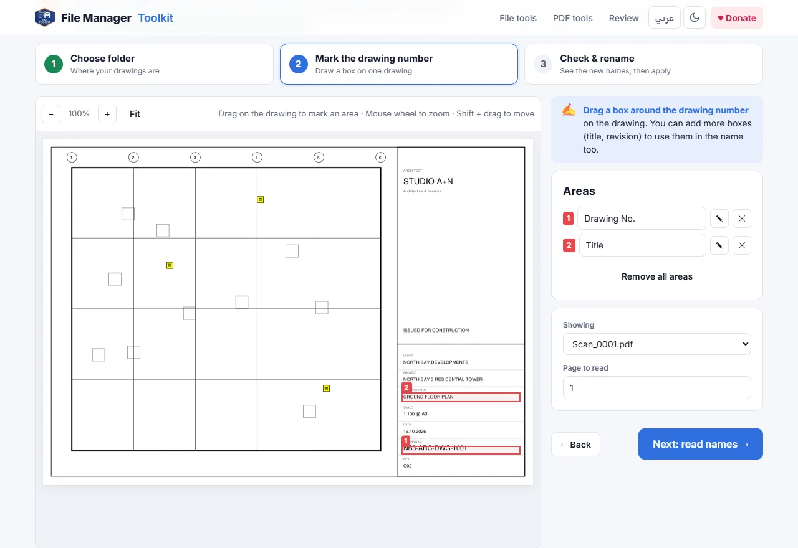
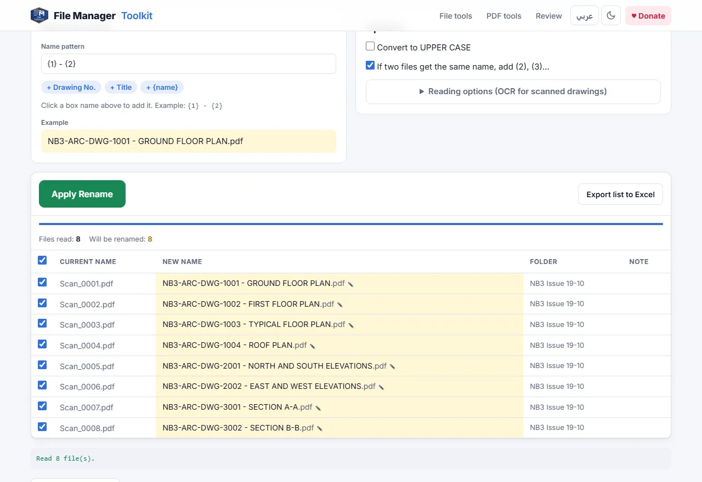

How to rename PDF drawings from the title block
Turn files like Scan_0001.pdf into names like NB3-ARC-DWG-1001 - GROUND FLOOR PLAN.pdf, for a whole folder of drawings at once, using the drawing number and title written in each title block.
Your files stay on your computer. Nothing is uploaded.
Short answer
Open Rename from Title Block, choose the folder with your PDF drawings, drag a box around the drawing number on one sheet, check the new names and click Apply Rename. The tool reads the same box on every PDF and renames each file after what it finds there.
Why renaming drawings by hand takes so long
Plotted sets, scanned sets and files from consultants rarely arrive with useful names. A typical issue folder is full of names like Scan_0001.pdf, Layout1.pdf or A3 print (2).pdf, while the real drawing number and title are only written inside the title block.
Renaming them by hand means opening every PDF, reading the number, typing it and checking you did not swap two sheets. With 50 or 300 drawings that is an afternoon of work and an easy place to make a mistake that ends up in a transmittal. The title block already holds the right name, so the faster way is to let the computer read it.
Step by step
Choose the folder with your drawings
Open the tool and click Select Folder. Pick the folder that holds the PDF drawings. Tick Include subfolders if the sheets are split into folders by discipline.
Draw a box around the drawing number
The first drawing opens on screen. Drag a box around the drawing number in the title block. Draw a second box around the drawing title, and a third around the revision if you want those in the name too.
Build the name pattern
Each box gets a number. A pattern like {1} - {2} gives the drawing number, a dash and the title. Click the chips under the pattern to add a box, or {name} to keep the old file name in the new one.
Check the new names
The tool reads the boxes on every PDF and shows the current name next to the new name. Click any new name to correct it. Files that would get the same name get (2), (3) added, so nothing is overwritten.
Apply the rename
Click Apply Rename. In Chrome or Edge the files are renamed right in your folder. If something looks wrong, click Undo last rename. In other browsers you get a ZIP with the renamed copies.


Name patterns that work well
- {1} gives the drawing number only, for example NB3-ARC-DWG-1001.pdf.
- {1} - {2} gives the number and title, the most common format for issue sets.
- {1}_{3} adds the revision, for example NB3-ARC-DWG-1001_C02.pdf, useful when you keep several revisions in one folder.
- Tick Convert to UPPER CASE if your office standard writes file names in capitals.
Characters that Windows does not allow in file names, such as / or :, are replaced with a dash automatically, so a title like "PLAN / SECTION" does not break the rename.
Scanned drawings and Arabic title blocks
Most PDFs plotted from AutoCAD or Revit have real text, which is read exactly. When a sheet was scanned or the text was exploded into lines, the tool uses OCR on the box instead. Open Reading options to choose English, Arabic or both, and set Codes only when the box holds a drawing number, so letters like O and the number 0 are not mixed up.
Before you send the set
Click Export list to Excel to keep a record of old and new names. After renaming, the Pre-flight Check can compare the file names with the title blocks and with your Excel drawing list, so duplicated numbers or missing sheets are caught before the transmittal goes out.
Rename your drawings now
Free, runs in your browser, and your drawings never leave your computer.
Open Rename from Title Block →Questions
Can I rename PDF files based on their content for free?
Yes. Rename from Title Block is free and has no limit on the number of files. It reads the text inside a box you draw on the drawing and uses it as the file name.
Are my drawings uploaded to a server?
No. The PDFs are opened by your browser on your own computer. Nothing is sent to any server, which is why it is safe for client and tender drawings.
What if the title block is in a different place on some sheets?
Run the tool once for each title block layout, for example once for A1 sheets and once for A3 sheets. You can also correct any single name by clicking it before you apply.
Does it work with scanned drawings?
Yes. If the box has no real text, OCR reads it in English, Arabic or both. Use a higher OCR DPI for small text.
Can I undo the rename?
Yes. In Chrome and Edge, Undo last rename puts the old names back. You can also export the list of old and new names to Excel.